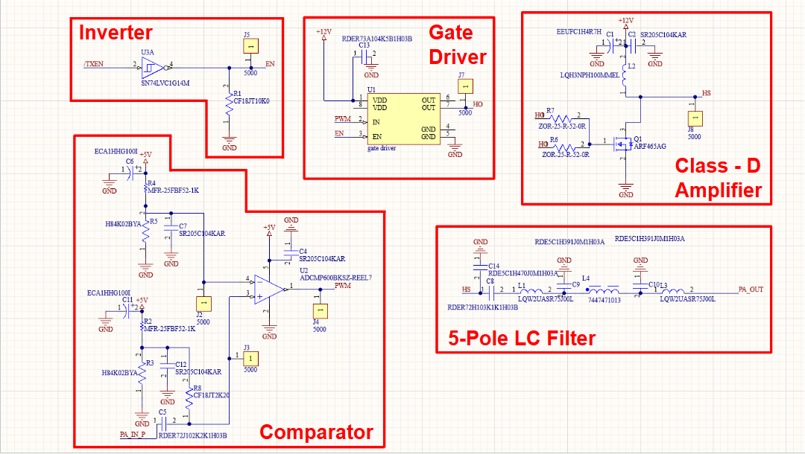
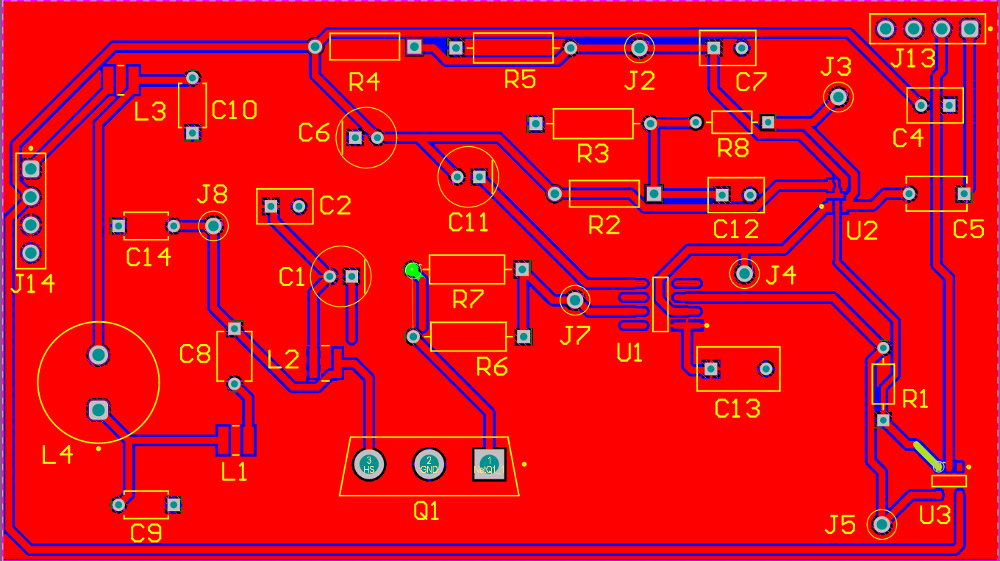
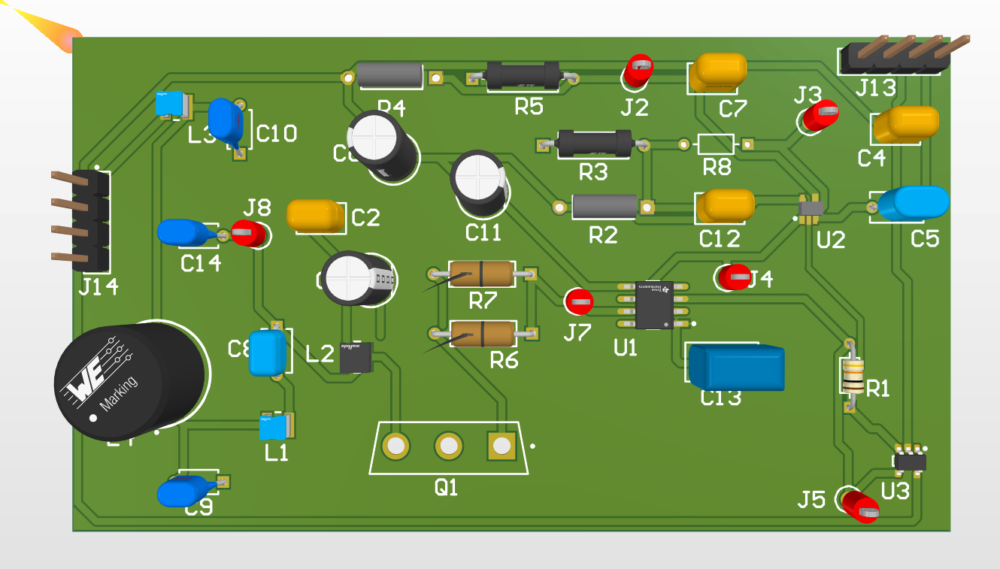
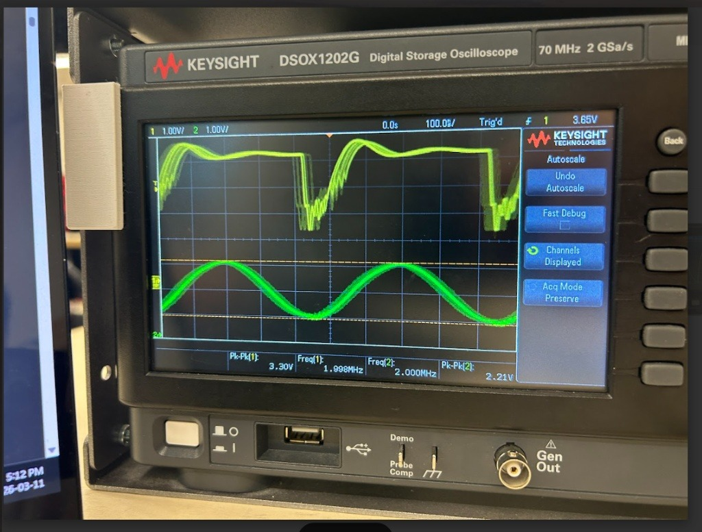
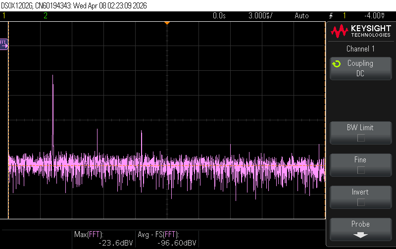
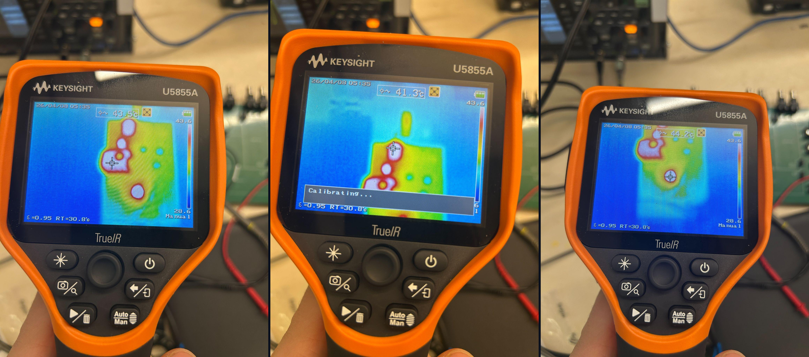

8–16 MHz Class-D SDR Power Amplifier
Designed, fabricated, and bench-verified the final RF transmit stage (Subsystem F) for a Flexible Radio Transceiver (FLRTRX). The board takes a weak 890 mVpp RF carrier from the quadrature mixer, amplifies it through a high-speed Class-D switching stage, and reconstructs a clean 14 MHz sinusoid into a 50 Ω antenna load—while shutting down cleanly during receive mode via an active-low transmit enable line.
How a Class-D RF Amplifier Works
In a Software-Defined Radio (SDR) transmit chain, the signal leaving the mixer is far too weak to radiate from an antenna. Linear amplifiers (Class-A or Class-AB) boost that signal by operating a transistor in its active region, where it simultaneously carries current and drops voltage—wasting a large fraction of the supply power as heat.
A Class-D amplifier avoids this by driving the output MOSFET strictly as a high-speed switch: either fully ON (near-zero voltage drop) or fully OFF (zero current). Because the switching waveform is a square wave rich in high-frequency harmonics, it is fed into a 5-pole LC low-pass filter that strips away the harmonics above 16 MHz and recovers a clean fundamental sine wave at the antenna port.
Stage-by-Stage Circuit Architecture
To keep the RF path reliable and easy to probe at every node on the bench, the board is broken into five distinct functional blocks with dedicated test points (J2–J8):
1. Active-Low Transmit Enable (Inverter Stage)
The SDR mainboard controls transmit/receive switching using an active-low /TXEN signal (0 V to transmit, 3.3 V to receive).
Because our gate driver expects an active-high enable, an inverting stage (U3, SN74LVC1G14, later patched with a discrete NPN BJT inverter) flips /TXEN into EN.
When the radio switches to receive mode, EN drops low, disabling the gate driver so the power amplifier draws less than 0.4 W and does not inject switching noise into the receiver.
2. High-Speed Comparator (Sine-to-Square Conversion)
The incoming RF carrier (PA_IN_P, ~890 mVpp at 14 MHz) is AC-coupled through C5 onto a mid-rail DC bias set by resistive dividers and decoupling capacitors.
A high-speed comparator (U2, TLV3601 / ADCMP600, ~2.5 ns propagation delay) compares the biased RF sine wave against a clean DC reference voltage, snapping it into a crisp 0–5 V rail-to-rail square wave (PWM) at the exact carrier frequency.
3. Low-Side Gate Driver (High-Current Drive)
A logic comparator cannot source or sink enough current to rapidly charge and discharge a power MOSFET's input gate capacitance at 14–16 MHz.
Slow switching edges would leave the MOSFET lingering in its linear region and cause severe thermal dissipation.
The UCC27614 low-side gate driver (U1, rated up to 10 A peak) boosts the 5 V comparator output into a stiff, high-current 12 V gate drive signal (HO) through damping resistors R6/R7, while cleanly gating the output via its EN pin.
4. Class-D Switching Stage (Power Amplification)
The gate driver switches the output N-channel MOSFET (Q1, IRF510) on and off at the RF carrier frequency.
An RF choke inductor (L2) connects the +12 V supply rail to the MOSFET drain (HS), acting as a constant-current feed at RF frequencies while allowing the drain voltage to swing well above the 12 V rail (~28.7 Vpp) during each switching cycle.
5. 5-Pole LC Reconstruction Filter (Harmonic Suppression)
A DC-blocking capacitor (C8) removes the 12 V DC offset from the drain node before the signal enters a 5-pole low-pass LC ladder (L1, C9, L4, C10, L3).
The filter is tuned to pass the 8–16 MHz operating band with minimal insertion loss while sharply rolling off the 2nd, 3rd, and higher switching harmonics—turning the raw drain pulses into a clean 14 MHz sine wave at PA_OUT.



Prototyping, Bring-Up & Hardware Rework
Before spinning the PCB, individual stages were breadboarded using SMD breakout adapters and characterized on a Keysight waveform generator and oscilloscope. Once the 2-layer board was fabricated and populated, bench bring-up uncovered three hardware faults that required root-cause diagnosis and physical PCB rework:


1. Gate-Driver Decoupling Capacitor Error (C3 / C13)
In the first revision, decoupling capacitors C13 and C3 were accidentally wired in series with the +12 V rail feeding U1, blocking DC power from reaching the gate driver.
We isolated the open supply rail with a multimeter, shorted C13 to restore +12 V continuity, and soldered a bypass capacitor directly between VDD and a nearby GND pad.
2. Missing Copper-Pour Connections on TXEN Inverter (U3)
Pads 3 (GND) and 5 (VCC) of the SOT-23 SN74LVC1G14 inverter were not tied to the board's power and ground pours.
To restore active-low /TXEN gating without waiting for a board respin, we prototyped a discrete NPN BJT inverter (TIP29CG with a bias divider) on a breadboard, verified logic inversion, and dead-bug soldered it directly onto the PCB.
3. SMD MOSFET Thermal Runaway & IRF510 Retrofit (Q1)
The original 2×2 mm SON CSD16301Q2 MOSFET repeatedly overheated and failed short between +12 V and GND across three units, confirmed via continuity and gate-drain-source resistance checks.
We replaced it with a through-hole IRF510 mounted to a bolted heatsink—its ~25 ns combined rise/fall time clears the 62.5 ns period at 16 MHz—and wired its gate, drain, and source directly to nearby filter and driver nets.

Stage-by-Stage Signal Verification (14 MHz)
Every stage was probed sequentially using a Keysight DSOX1202G oscilloscope to trace the signal from the 890 mVpp RF input through switching amplification and 5-pole reconstruction:
| Test Point | Circuit Stage | Measured Vpp | Frequency |
|---|---|---|---|
| PA_IN_P | Mainboard RF Input | 890 mVpp | 14.00 MHz |
| J4 | Comparator Output (PWM) | 5.39 Vpp | 14.04 MHz |
| J7 | Gate Driver Output (HO) | 14.7 Vpp | 14.40 MHz |
| J8 | MOSFET Drain Switching Node (HS) | 28.7 Vpp | 14.04 MHz |
| C9 | Mid-Filter (After L-Match) | 30.2 Vpp | 14.00 MHz |
| PA_OUT | Final Output (Post-Attenuator) | 221 mVpp (22.1 Vpp) | 14.00 MHz |
Harmonic Distortion, Power & Thermal Results
Measured through the output attenuator into a 50 Ω load at 14 MHz, the reconstructed sine wave reached 22.1 Vpp, corresponding to 1.22 W of RF output power (meeting the 1–10 W specification) at 37% DC-to-RF efficiency (3.31 W DC draw at 12.0 V / 0.275 A).
Pulling /TXEN high to 3.3 V dropped board consumption to 0.375 W (31 mA), confirming active-low receive isolation.
FFT measurements at 14 MHz recorded the fundamental at −23.6 dBV with harmonics suppressed down to −67.1 dBV (2nd), −74.5 dBV (3rd), −79.3 dBV (4th), and −79.8 dBV (5th), yielding 0.73% THD—more than 13× better than the 10% requirement.
Thermal imaging with a Keysight U5855A after 1 minute of continuous transmit operation confirmed that the three highest-dissipation components—the IRF510 MOSFET, L4 filter inductor, and U1 gate driver—all stabilized safely between 41 °C and 44 °C.


Full System Integration Demo
With the reworked power amplifier mounted onto the FLRTRX mainboard alongside the rest of the transceiver subsystems, the complete Software-Defined Radio operates end-to-end: